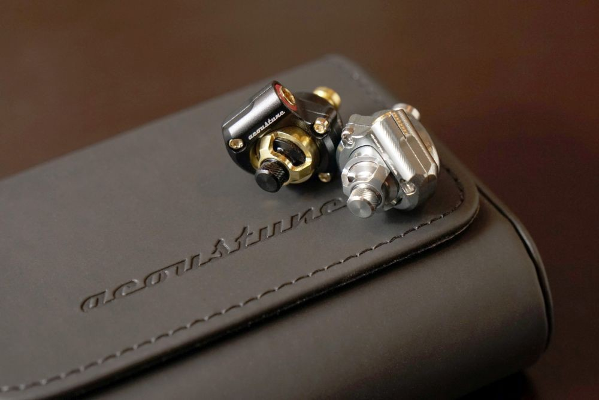
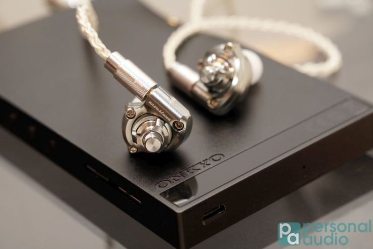
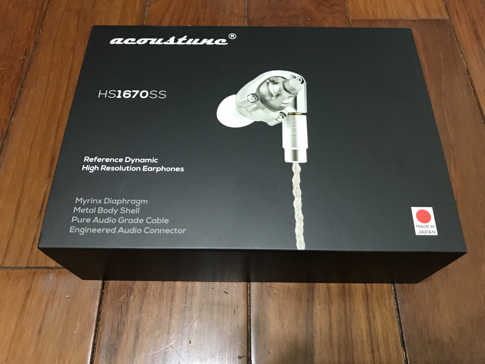
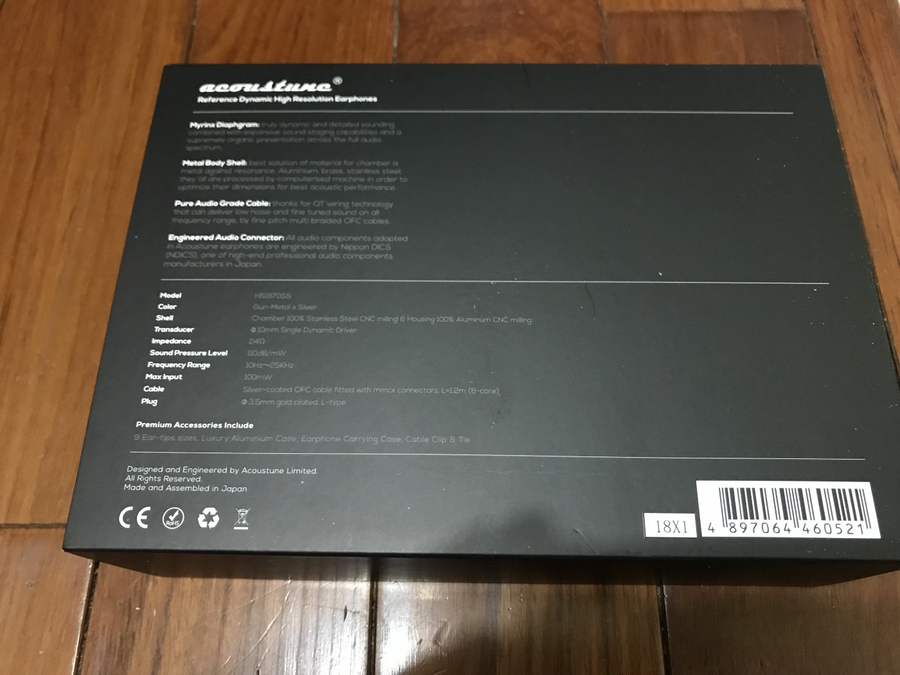
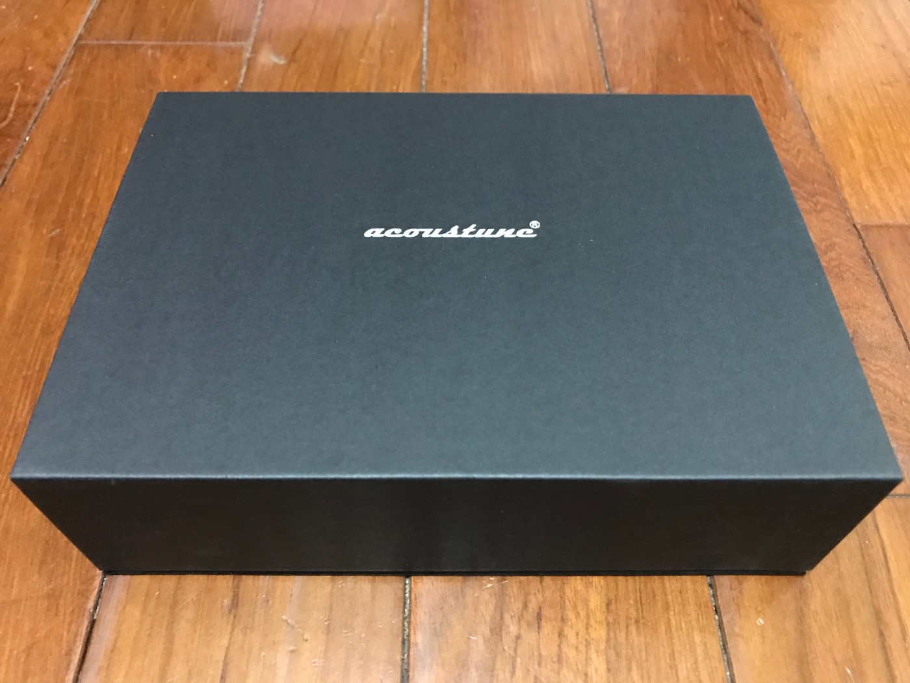
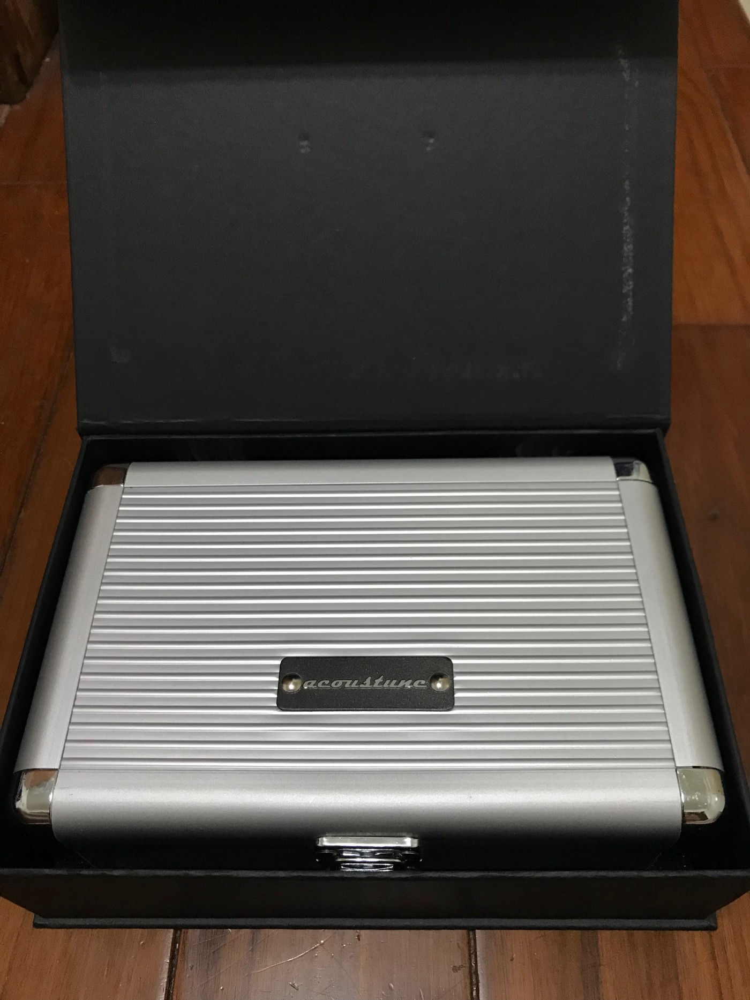
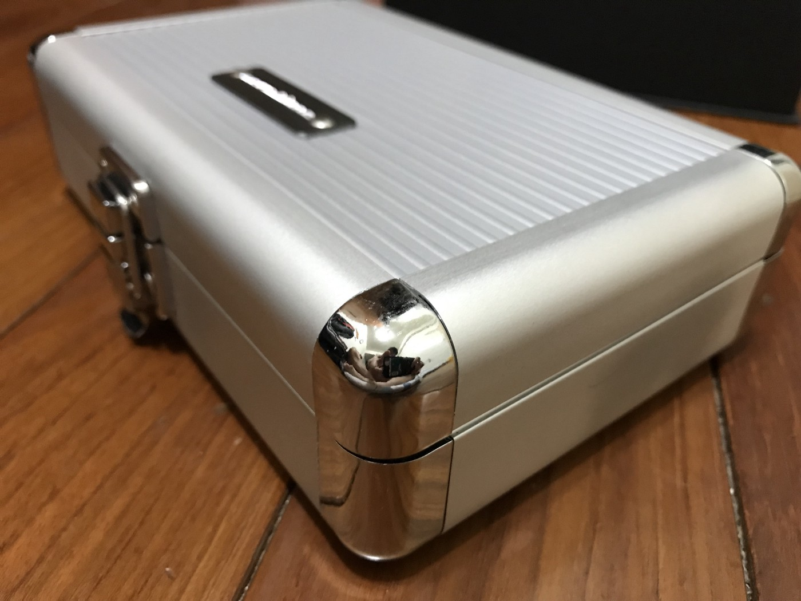
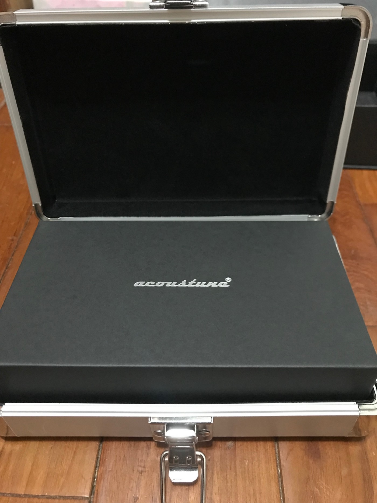
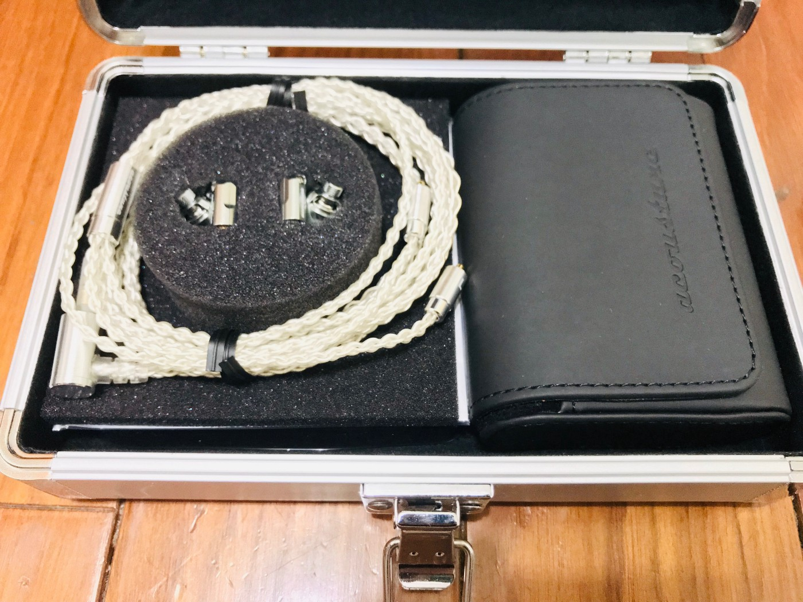
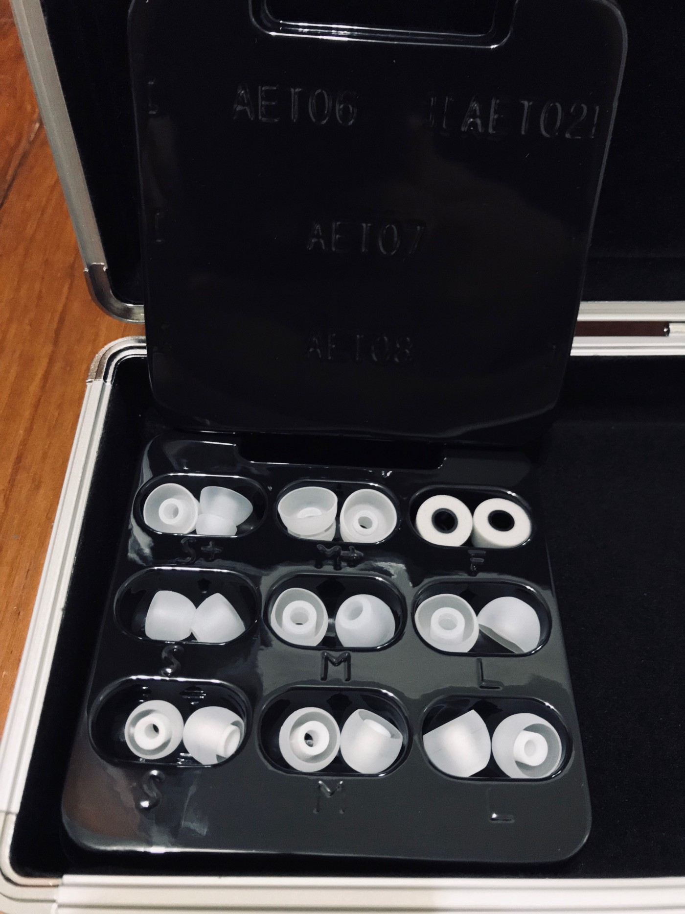

# [開箱] Acoustune HS 1670ss
# 對於音質的追求，是人類一場永無止境的聖戰

[\ 圖片取自](https://personalaudio.hk/2018/09/20/acoustune-hs-1650-cu-and-hs-1670-ss-riview/) 左邊：HS1650cu, 右邊 HS1670ss
自古以來人們對樂音的追求不曾停歇。如何盡可能地減低聲音的失真、如何更加地還原最初、最原始的感動，一直是一場戰爭。
隨著科技的進步，音感裝置也越做越細緻。市面上的音感裝置也是琳瑯滿目。對於一個初入坑的新手來說，音樂之於我就如同我對台灣的民主素養的觀點一般，是一步一步得艱辛爬行至今的。
為什麼這麼說呢？
人一旦嘗過更加美好的事物，便難以再回去了；民主亦是如此。
我對於台灣的民主素養是越來越感覺進步的。從去年的太陽花學運，到今年的公投，這是一座一座的里程碑。
扯遠了，今天不是來討論政治的。
曾經我也自認 木耳 、曾經也覺得 有副可以「聽到聲音」的耳機即可 、曾經也覺得 耳機就是個消耗品，不用買太好 ，直到 遇̸人̸不̸淑̸交̸到̸壞̸朋̸友̸ ，外加某次在朋友家，試聽了對方的真空管音響。讓我瞭解到自己對音樂也是有 原始本能 的。
在那個瞬間，我突然深刻體會到許多人為何願意花費大把銀兩只為了更加追求這個難以用數字衡量，甚至摸不著、見不到的事物。
感動，是難以用數字衡量的。
為了感動這兩個字，你願意花費多少？
那次的感動，讓我跌入了這次的深淵。 (代̸價̸真̸大̸啊̸！̸)
於是從那次美好的體驗回來後，我開始認真找尋音感裝置。當中做了一些功課，慢慢的確定了自己的需求。
# 對我來說，我的要求是很單純的 — 清晰
我想要的是能夠在我享受音樂的期間，盡量地不錯失任何一點樂音。
因此，我來到耳機板上推薦、位於捷運公館站旁的專業音響耳機店家。這家店家我就不屬名了，以免有廣告嫌疑。我是極度推薦這家店的。
店內可以試聽的耳機應有盡有，店員與老闆非常的專業，針對我的疑問不僅慷慨解惑，也能針對我提出的需求，耐心的陪我嘗試一副又一副來自不同品牌、不同特色的耳機。
經過無數輪的試聽、千挑萬選，在我幾近心灰意冷的時候，店員默默地將今天的主角，放到了我的面前 — Acoustune HS 1670ss 。

取自 https://personalaudio.hk/2018/09/20/acoustune-hs-1650-cu-and-hs-1670-ss-riview/acoustune-hs-1650-cu-and-hs-1670-ss-14/
這副耳機的機身是全金屬製的，感人一種冷硬的感覺。但是播放出來的聲音卻很是亮，而且非常清晰。
就是他了！
這是我當下的第一印象。雖然外表給人一種冷冽的感受，但是宏亮音場、清晰的聲線、漂亮的高頻、不遜色的低頻，沒有什麼可以挑惕的地方。
於是我終於第一次在音感裝置上也投下了大量的銀彈，第一次成為了我以前所無法理解的那一群人中的其中一個。
然而感動，是難以用數字衡量的。
以上結束了感性的中二文。接下來就是拿回家開箱後，再次體驗到視覺上的感動啦！
首先映入眼簾的是很有質感的紙盒。跟 Apple 的產品包裝質感有一點點相似。

背面圖

滑開紙盒後…. 還有一個紙盒 。

第二個紙盒打開後，映入眼簾的是一個像是公事箱的小盒子

不得不說，日本人真的很愛一層一層的盒裝。

打開這個盒子，真正的實體被覆蓋在保護用紙蓋下方。

保護真的非常的「到位」…
拿開這個保護蓋後，我們終於見到了朝思暮想的主角。

右邊是附贈的硬皮耳機盒。左邊便是 Hs1670ss 真身了。
耳機機身是與線分離的，要自己組裝。這也意味著，未來我們可以自己升級線材。
線材又是一個坑呀！
取出本體後。在最底部， Acoustune 非常好心地附給我們滿滿的耳機套。大小樣式、任君挑選。

組裝起來後就是這樣子。
](1*NuqJ052KUcZ1KFg_pUVOEw.jpeg){kind=link}
取自 https://era-in-ear.com/shop/product/acoustune-hs1670ss
這是我第一次如此認真的選擇一副音感裝置。而這次大冒險的體驗也非常的好。
不得不說，日本人真的對產品的每個細節都有極佳的注重。打從拿到手的那一刻起、經過開箱、到見著本體，層層的感動與讚嘆也是不言而喻的。
經過這次對於音感裝置的探尋，也讓我對這塊領域的事物有了新的體會。
不同的音感裝置使用著各自的方式去詮釋被記錄下來的聲音記錄。沒有什麼是最好的音感裝置，只有適合自己的。網路上說好的不一定好；網路上說差的也不一定差。如何選擇合適的音感裝置，只能靠自己慢慢摸索。
至此，我希望這副耳機能夠陪我走過接下來一段不算短的時光。
當然我相信經過這次的體驗，我對於樂音的追求不會只停滯於此。但是我不想太快就又有新的體悟啊！每一次的領悟，可能伴隨著的是大量的銀彈流失。
這我可承擔不太起…。